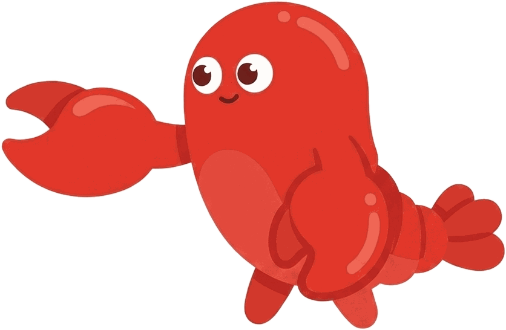
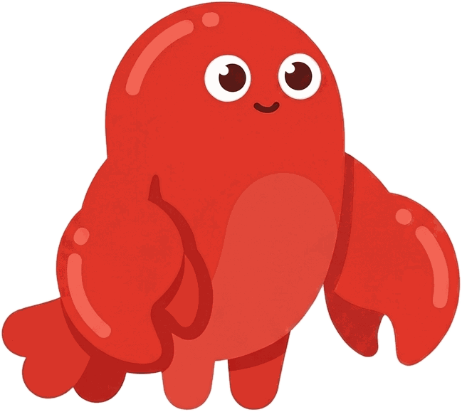

You say, at 11:40pm
“What did I just break?”
Clawdy reads the dialog you've been staring at. "Nothing's lost. Click Revert to Saved, that one." The claw is already on it.
Clawdy is an AI cursor buddy that sees your screen, talks back, and points at exactly what it means. In any app.
Free. Runs on the Claude Code or Codex you already have.
Hold Control + Option and talk. Clawdy looks at your screen, talks back, and the claw goes to the exact spot.
You say, at 11:40pm
Clawdy reads the dialog you've been staring at. "Nothing's lost. Click Revert to Saved, that one." The claw is already on it.
You say, in System Settings
Twelve toggles, zero explanation. Clawdy circles one. "Just this one. Leave the rest off."
You say, on a government website
Clawdy reads the whole form, not just the box. "That's your adjusted gross income. It's line 11 on last year's return."
You say, six paragraphs deep
Clawdy skips the pleasantries and highlights one sentence. "The invoice, by Friday. Everything else is padding."
You say, with 14 tabs open
Big ask, so Clawdy goes and does it: reads the web, builds the comparison with pictures and prices, opens it on your screen. "Done. The middle one, if you want my pick."
Big asks get handed to a skill: a separate agent that goes off, does the work, and comes back with a page on your screen or a spoken answer. Your Claude Code skills already work by voice. Teach it a new one with a single file.
You say it.
[TRIP_PLANNER] plan a 3-day kyoto itineraryClawdy decides it's a job for a skill, not a quick answer, and hands it off.

Kyoto, day by dayThe skill builds the page and opens it. Keep talking to change it.
---
name: recipe-finder
description: finds a recipe for what the user has on hand and builds a page with it.
use for "what can i make with X". example — user says "what can i make with
eggs and spinach": [RECIPE_FINDER] find a recipe using eggs and spinach and build a page.
allowed-tools: WebSearch, WebFetch, Write
clawdy-deliverable: html
---
Find a good recipe for: {{task}}. Search the web, pick one, and write ONE
self-contained HTML page to {{outputPath}} with ingredients, steps, and timing.Same SKILL.md format as Claude Code. The description tells the router when to use it; the body tells the agent what to do. Then just say “what can I make with eggs and spinach.”

Free and open source. Runs on the Claude Code or Codex you already have. Your voice never leaves your Mac.